A Higher Benchmark
We founded SidingPro after noticing too many exterior contractors treating siding as fast superficial cladding—ignoring moisture barriers, crooked reveals, and deteriorating window corners.
We believe residential siding is more than weather protection—it is the architectural identity of your home. We approach every facade with carpenter precision, enduring materials, and deep respect for your property.
Rather than racing through volume installations, we built our company on craftsmanship discipline, material honesty, and lasting homeowner relationships.
We founded SidingPro after noticing too many exterior contractors treating siding as fast superficial cladding—ignoring moisture barriers, crooked reveals, and deteriorating window corners.
We shifted from general labor to dedicated siding joinery. Every crew was trained in laser leveling, rainscreen ventilation gaps, and mitered exterior trim joinery.
Partnered directly with premier siding mills and manufacturers. We mastered fiber cement cutting protocols, insulated vinyl thermal expansion, and western red cedar sealing.
Today, our team delivers high-touch consultations, meticulous installations, transparent daily updates, and architectural curb appeal that homeowners cherish for decades.
Professional siding is not simply about fastening planks to a wall. Long-term performance, weatherproofing, and curb appeal depend on micro-precision at every transition.
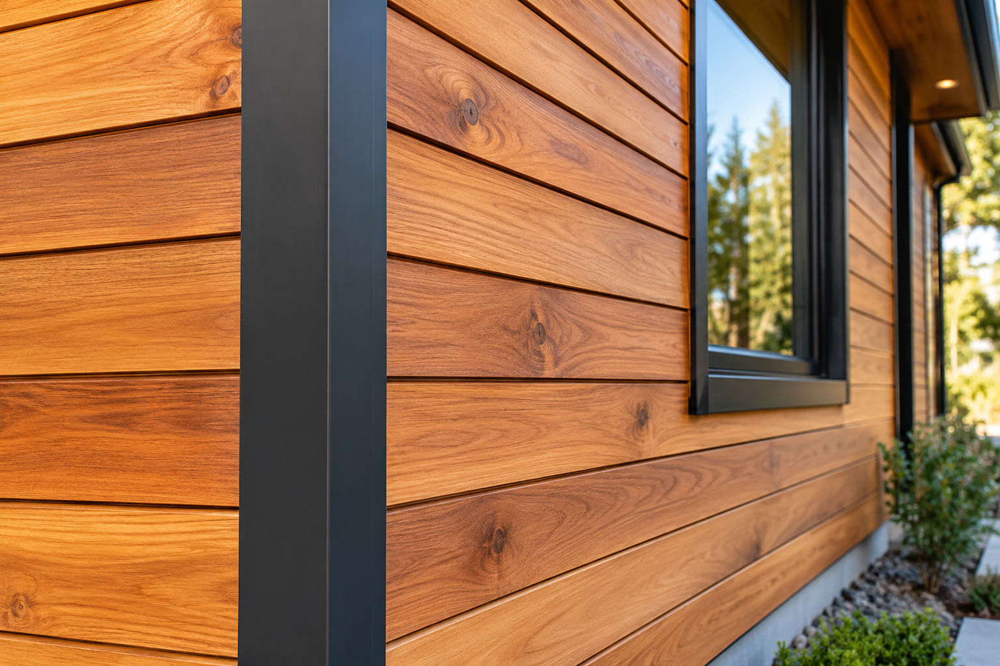
AlignmentWe baseline each elevation using digital rotary lasers, ensuring course lines run continuously across windows, corners, and complex rooflines without staggering or drifting.
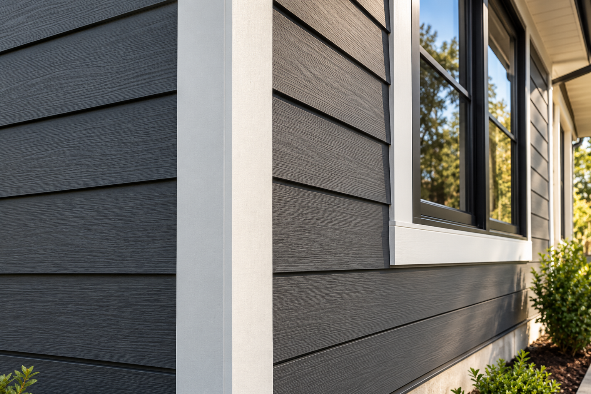
JoineryOutside and inside corners receive dedicated backer flashing, concealed mechanical fasteners, and precision factory miters designed to absorb thermal expansion cleanly.
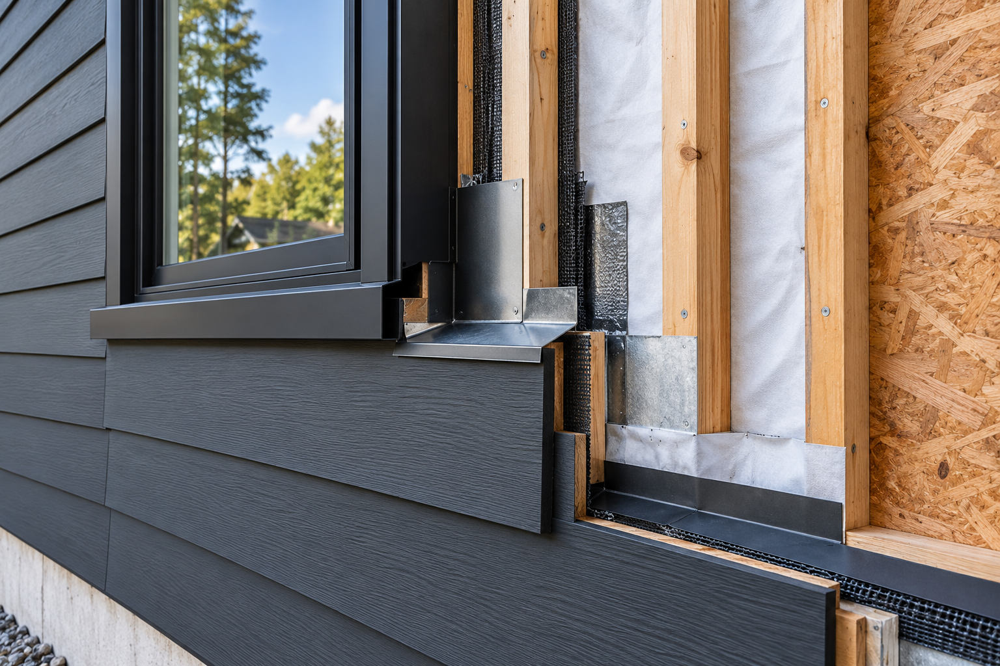
Moisture DefenseBehind the visible boards sits our high-performance drainage plane. We direct moisture safely down and out through custom drip caps and vapor-permeable housewrap.
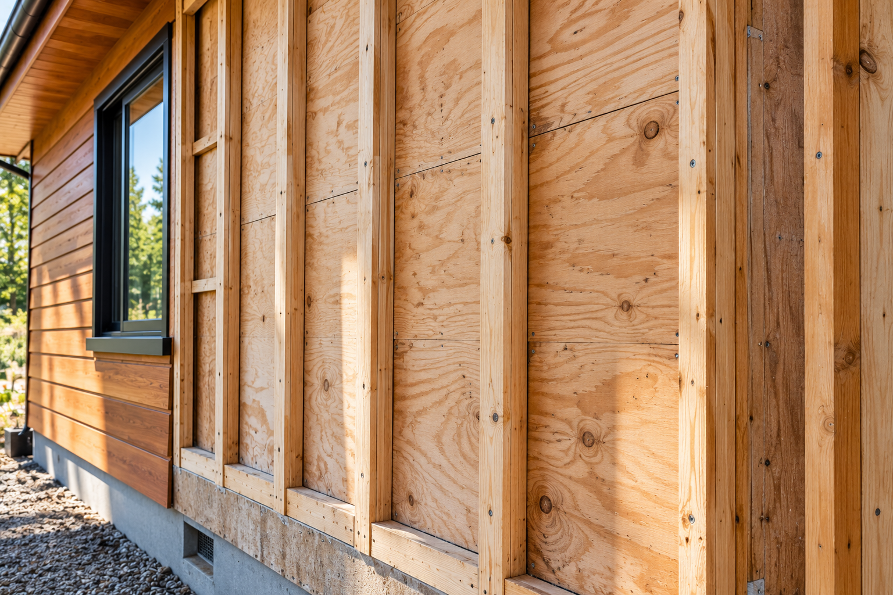
Material IntegrityWe never install over compromised sheathing. Walls are inspected for moisture, sistered where uneven, and furred out to achieve a flat, rigid nailing plane.
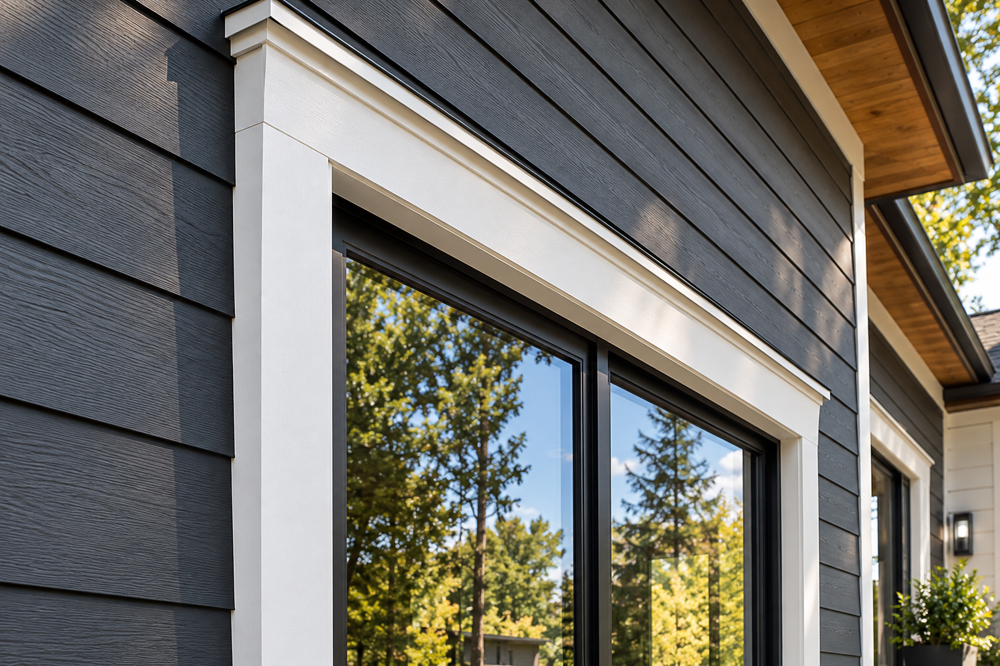
Window SurroundsWindow frames and door surrounds receive tailored architectural casings with integrated head flashing, framing your glass fixtures with crisp dimensional shadow lines.
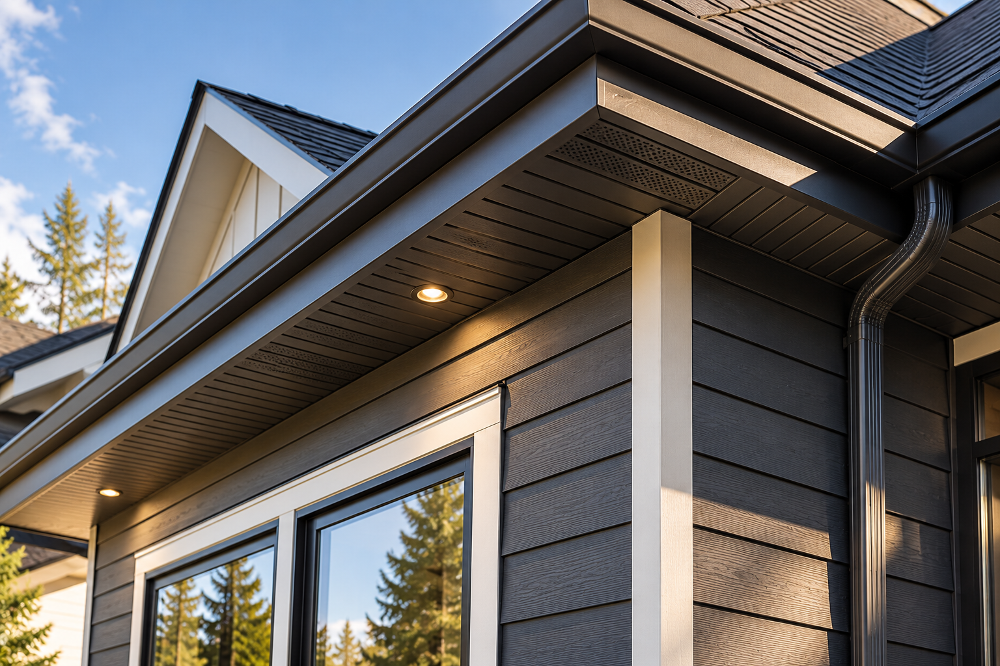
TransitionsThe top courses tie seamlessly into soffits, eaves, and frieze boards, eliminating wind-driven rain penetration points and discouraging pest infiltration.
Every project, regardless of size or siding style, is held to four non-negotiable craftsmanship standards.
Continuous horizontal level checks across every elevation. We adjust for house settlement so reveal margins stay visually plumb across uneven foundations.
Complete strip-down of damaged substrate, wall cavity inspection, structural repair, and high-performance weather-resistive barrier (WRB) installation.

Understanding seasonal expansion rates, thermal cycles, and wind load dynamics unique to fiber cement, vinyl profiles, and natural cedar species.
Clean cut edges, color-matched stainless fasteners, neatly tooled commercial polyurethane sealants, and meticulous touch-up on all exposed ends.
Great exteriors are built by skilled tradespeople who take personal pride in their work. Meet the specialists who oversee, install, and manage your siding project.
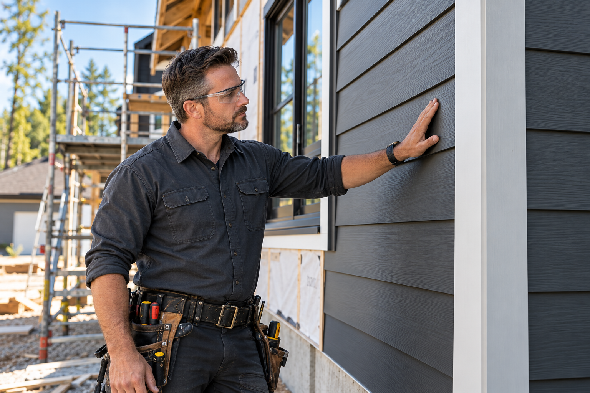
Specializes in architectural fiber cement joinery and laser elevation alignment. Marcus leads our field installation crews with rigorous on-site carpentry standards.
Manages homeowner communication, permit logistics, and daily progress logs. Elena ensures every project runs on schedule with zero surprises for the homeowner.
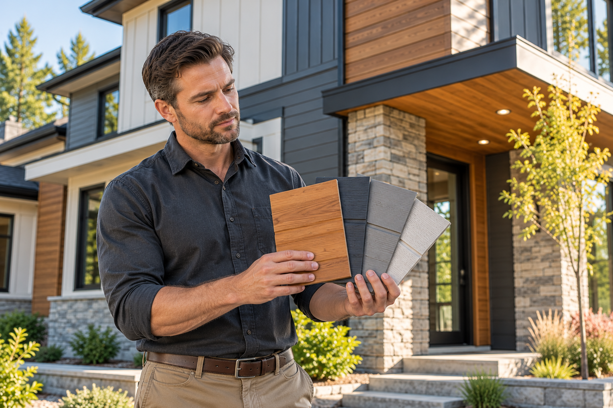
Guides homeowners through material durability trade-offs, color palettes, and profile selections tailored specifically to their neighborhood architecture works.
Conducts independent 32-point quality audits on flashing, fastener depth, and clean site management prior to the final home-owner walk-through there up.
We don't push a single product. Instead, we explain how each siding medium interacts with your home's architecture, local climate, maintenance expectations, and budget.
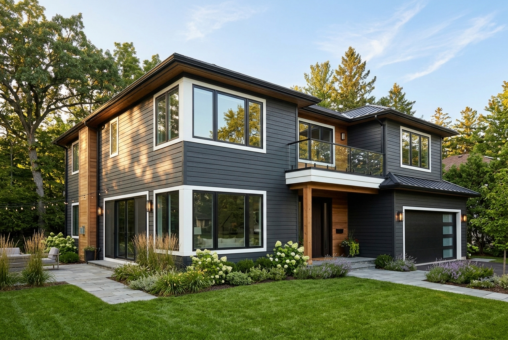
Contemporary insulated vinyl has evolved far beyond past generations. Modern deep-profile panels resist impact, eliminate painting cycles, and incorporate continuous foam insulation.
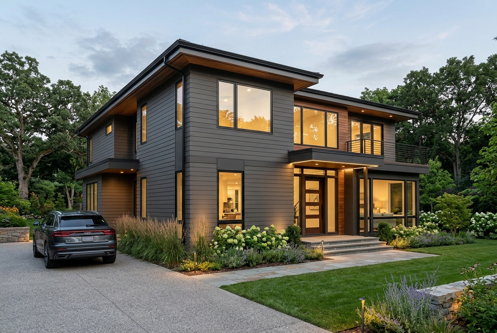
A heavy, fire-resistant blend of Portland cement and cellulose fibers. It replicates authentic painted wood grain without the risk of rotting, woodpecker damage, or insect boring.
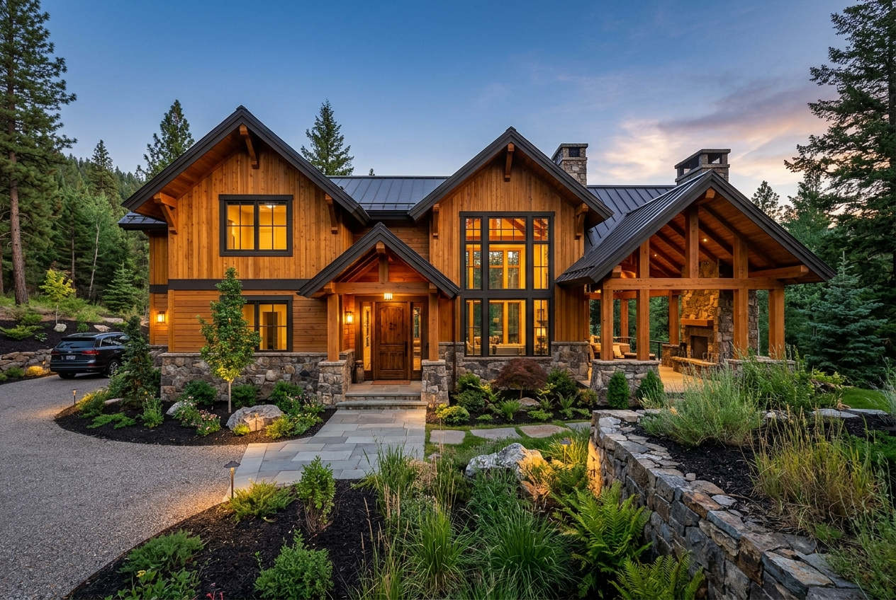
Unmatched natural grain warmth and organic beauty. Cedar provides natural preservative tannins and exceptional acoustic damping for homeowners seeking timeless organic character.
From our first walkaround to your final inspection walkthrough, we prioritize clear communication, respect for your home life, and full installation transparency.
We listen to your exterior goals, problem areas (drafts, rotting wood, faded paint), and your desired aesthetic direction.
Comprehensive on-site exterior audit: measuring wall planes, checking moisture ingress, and evaluating substrate health.
We present clear options with physical material samples, transparent itemized pricing, and architectural color renderings.
Disciplined field installation with property tarping, daily magnet sweeps, and regular supervisor progress check-ins.
A detailed joint walkthrough with our project manager to ensure every corner, seam, and trim detail meets your approval.
Our reputation is built on straightforward commitments and respectful project execution.
We shield your landscaping, flowerbeds, outdoor lighting, and air conditioners with protective plywood and tarps before work begins.
You receive concise end-of-day text updates outlining what was accomplished, what is planned next, and upcoming weather considerations.
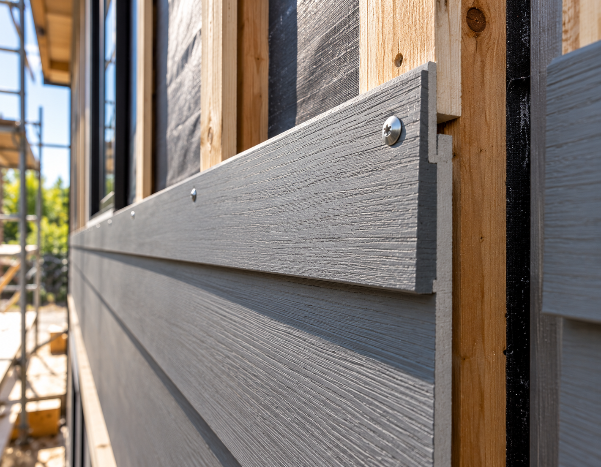
Structural IntegrityEvery board is nailed into solid wall studs using corrosion-resistant hot-dipped galvanized or stainless steel fasteners at manufacturer depths.
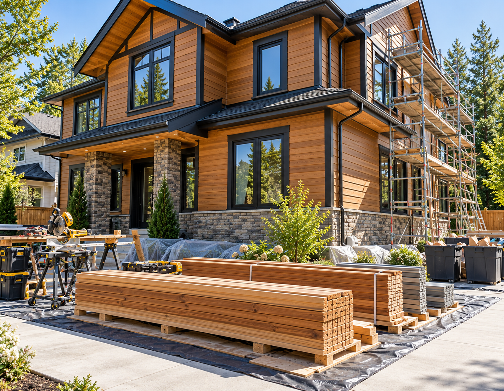
CleanlinessMaterials are neatly staged on dunnage, waste is disposed of into roll-off containers daily, and driveways are kept clear for homeowner vehicles.
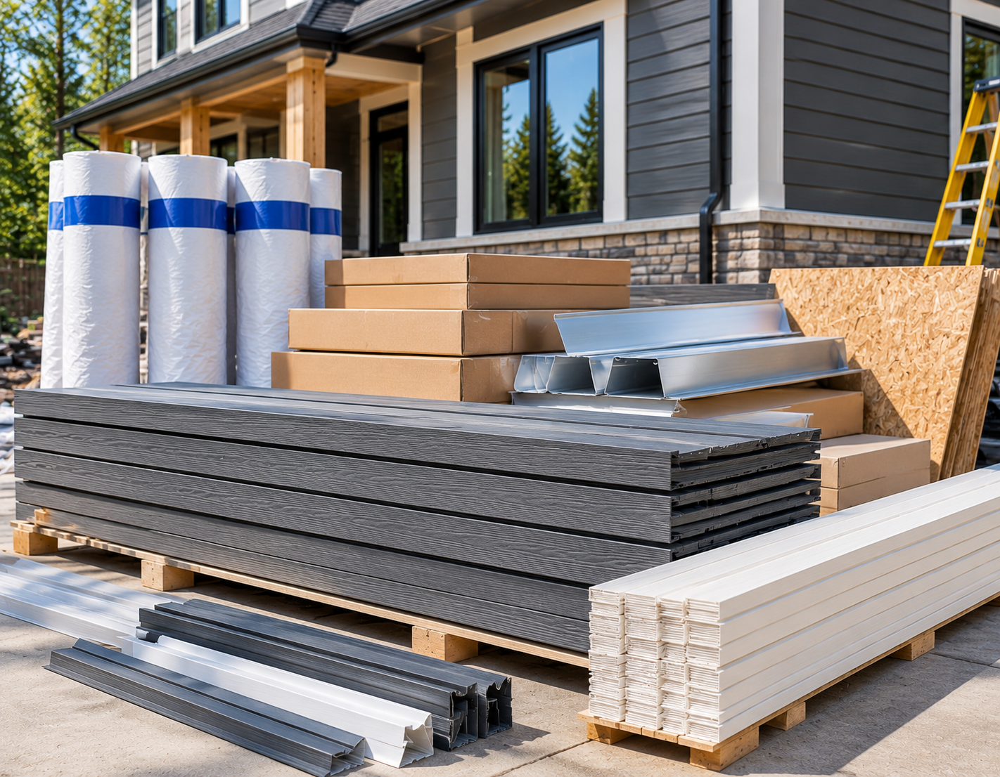
TransparencyAll siding bundles, trim components, flashing rolls, and housewrap products are delivered in original manufacturer packaging with full warranty certificates.
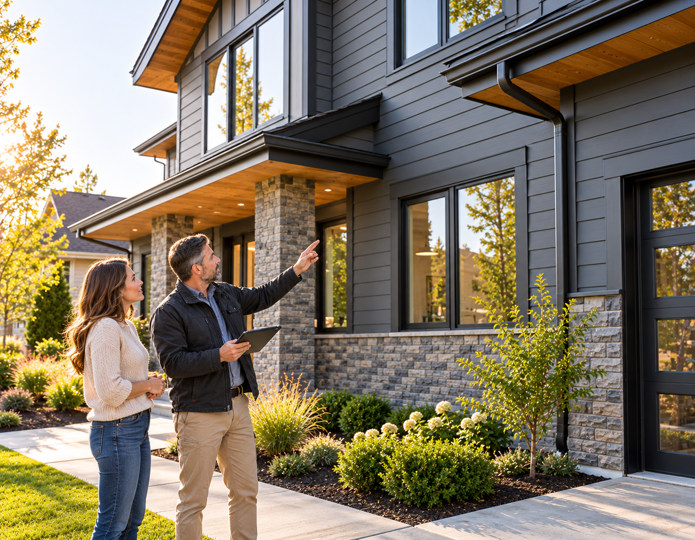
Quality Sign-OffWe do not issue final invoices until the homeowner has completed a comprehensive daylight walkthrough with the project manager and signed off on quality.
A closer look at the finishes, textures, and precision transitions we deliver on real homes.


Siding should be installed once and perform for decades. We commit to thorough preparation, superior weatherproofing barriers, certified fastening, and clear daily communication throughout your renovation.

Mon – Sat: 8:00 AM – 6:00 PM · Instant Consultation
Schedule On-Site Walkthrough